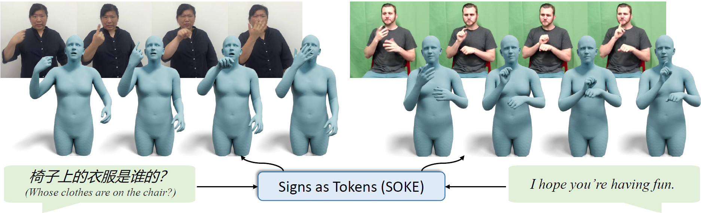
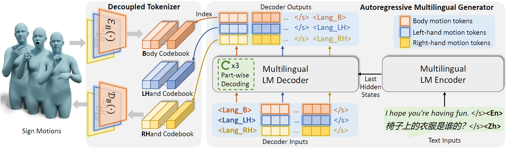
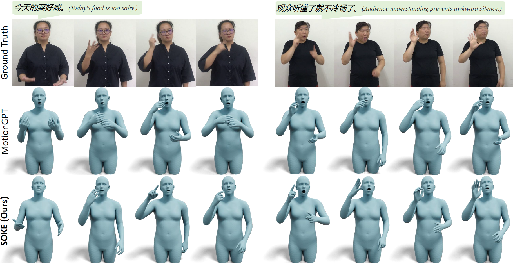
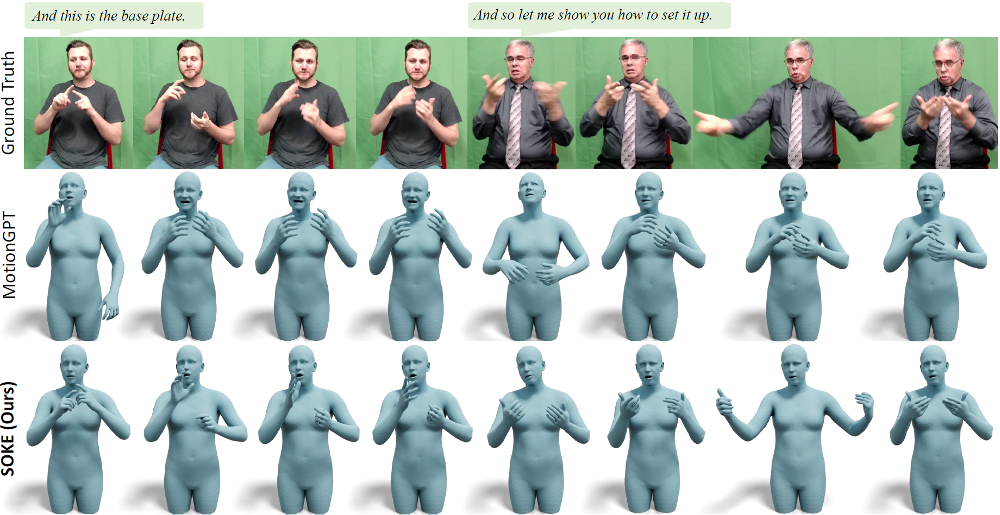

Signs as Tokens: An Autoregressive Multilingual Sign Language Generator
- Ronglai Zuo
- Rolandos Alexandros Potamias
- Evangelos Ververas
- Jiankang Deng
- Stefanos Zafeiriou
- Imperial College London

In this paper, we propose Signs as Tokens (SOKE), a unified sign language generator that can produce multilingual signs from text inputs. (Left: Chinese sign language; Right: American sign language.)
Abstract
Sign language is a visual language that encompasses all linguistic features of natural languages and serves as the primary communication method for the deaf and hard-of-hearing communities. While many studies have successfully adapted pretrained language models (LMs) for sign language translation (sign-to-text), drawing inspiration from its linguistic characteristics, the reverse task of sign language generation (SLG, text-to-sign) remains largely unexplored. Most existing approaches treat SLG as a visual content generation task, employing techniques such as diffusion models to produce sign videos, 2D keypoints, or 3D avatars based on text inputs, overlooking the linguistic properties of sign languages. In this work, we introduce a multilingual sign language model, Signs as Tokens (SOKE), which can generate 3D sign avatars autoregressively from text inputs using a pretrained LM. To align sign language with the LM, we develop a decoupled tokenizer that discretizes continuous signs into token sequences representing various body parts. These sign tokens are integrated into the raw text vocabulary of the LM, allowing for supervised fine-tuning on sign language datasets. To facilitate multilingual SLG research, we further curate a large-scale Chinese sign language dataset, CSL-Daily, with high-quality 3D pose annotations. Extensive qualitative and quantitative evaluations demonstrate the effectiveness of SOKE.
Method Overview

An overview of our proposed method, Signs as Tokens (SOKE). Our approach consists of two key components: a decoupled tokenizer (DETO) and an autoregressive multilingual generator (AMG). DETO transforms the input pose sequence to a set of discrete tokens using three distinct vector quantized variational autoencoders, each one composed of a motion encoder (E), a motion decoder (D), and a codebook. These components work together to discretize input sign sequences from various body parts. Leveraging a pretrained language model (LM), the AMG can later generate multilingual signs from text prompts with a tailored part-wise decoding strategy.
Qualitative Evaluation


Qualitative comparisons of generated signs between our proposed method, SOKE, with the baseline method, MotionGPT, on CSL-Daily and How2Sign. The results indicate that SOKE can generate finer-grained hand articulations than MotionGPT..
Video Demos
Citation
@article{zuo2024soke,
title={Signs as Tokens: An Autoregressive Multilingual Sign Language Generator},
author={Zuo, Ronglai and Potamias, Rolandos Alexandros and Ververas, Evangelos and Deng, Jiankang and Zafeiriou, Stefanos},
journal={arXiv},
year={2024}
}
Feel free to contact Ronglai Zuo if you have any questions. The website template is adapted from AniPortraitGAN.